flowchart LR classDef big font-size:36px,fill:#9CD97A,stroke:#11AB67,color:#000000; A["Input<br/>FFCO2 by<br/>sector"] --> B["Add climate<br/>and 5D land<br/>use data"] --> C["Correlation<br/>analysis to<br/>identify<br/>redundant<br/>variables<br/>for GPS"] --> D["Confounder<br/>analysis<br/>DAGs using<br/>Strata‑sum<br/>importance"] --> E["Test GPS<br/>functions<br/>GLM, BART,<br/>etc."] --> F["Doubly<br/>robust<br/>outcome<br/>model<br/>BART"] --> G["Outcome<br/>models<br/>for 5D<br/>treatments<br/>linear<br/>regression"] class A,B,C,D,E,F,G big;
Multiscale Carbon Burden of Infrastructure in the United States
WCTR, Toulouse, France
Jason Hawkins, PhD PEng
2026-09-01
Overview
- Study land use & climate mitigation relationship by combining Vulcan 1-km gridded fossil fuel CO2 (FFCO2) & EPA Smart Location Database land use features
- Partition emissions into transportation, residential energy, & scope 2 residential electricity
- Perform doubly robust inference using continuous propensity scores & BART outcome regression
Motivation
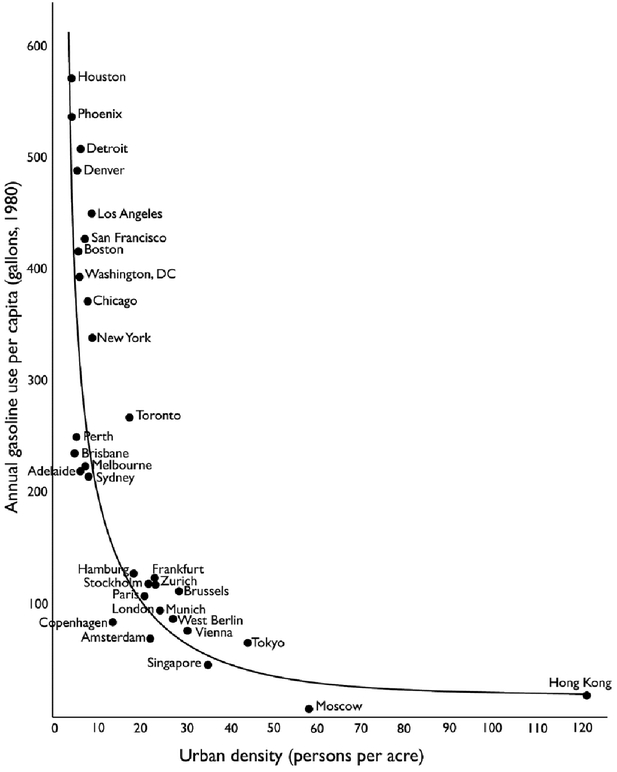
Newman & Kenworthy (1989)
Literature
- Urban economics: Glaeser & Kahn (2008) used an ad-hoc CO2 estimation strategy to compare 66 metropolitan areas
- Lowest CO2 rates in California
- Highest CO2 rates in Texas & Oklahoma
- Development restrictions push new development into high CO2 regions
- Urban planning: Kockelman (1997) + Cervero & Ewing (2010) examine 3/5Ds of land use
- Density, Diversity, Design, Destination Access, & Distance to Transit
- Urban science: Fragkias et al. (2013) used earlier version of Vulcan CO2 dataset (1999-2008) to study urban scaling in total CO2
- Found proportional scaling of 0.95% increased CO2 per 1% increase in population – i.e., larger cities not significantly more efficient
Model Development Process
Confounder Identification
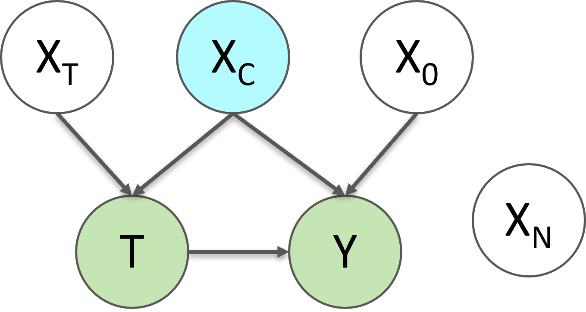
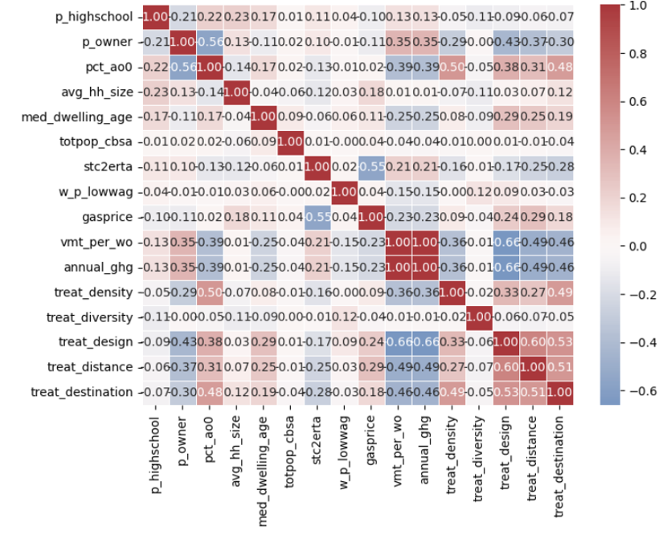
Conditional Variable Importance
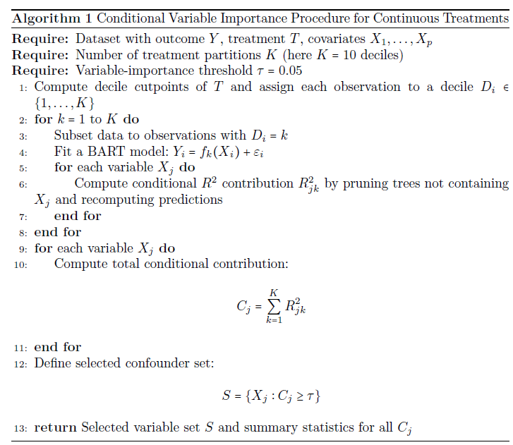
Doubly Robust Outcome Model
BART Outcome Model
\[\begin{split} \ln(CO_2 \text{ per capita}) =& \text{ln(total CBSA population)} \\&+ \text{ln(CBSA population density)} \\&+ \text{ln(average CBG treatment level in CBSA)} \\&+ \text{propensity score} \\&+ \text{CBSA fixed effect} \end{split}\]
Doubly Robust Adjustment using BART & Continuous GPS
\[\hat{\mu}_{i}^{DR}(t) = m(t,X_i) + w_i(t)\left\{Y_i - m(T_i,X_i)\right\}\]
Individual Transportation Results
- Note: results are production-based, meaning allocated to the point of emissions not trip origin
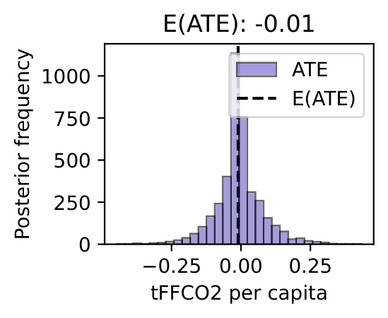
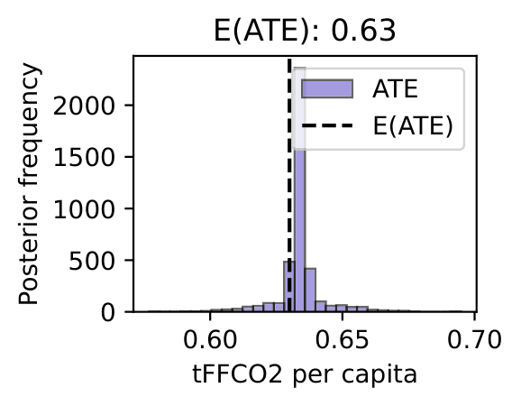
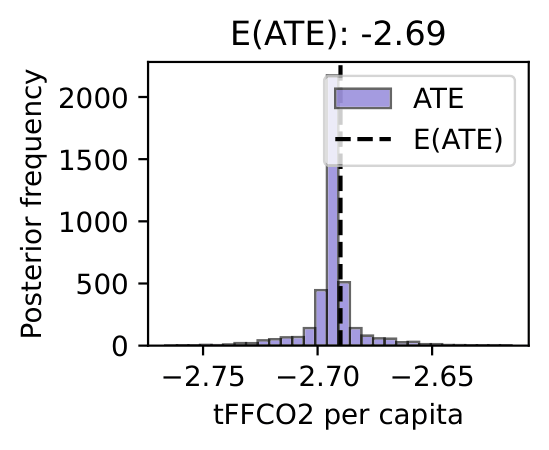
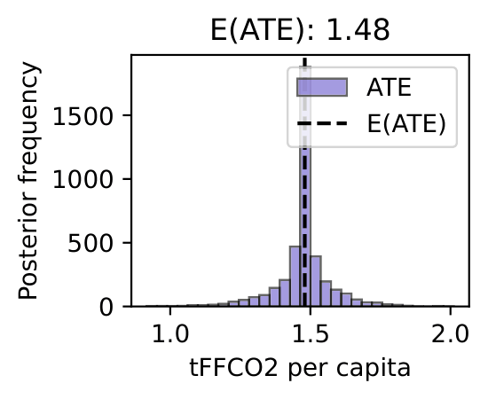
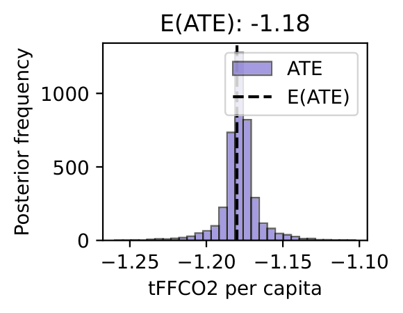
Joint Transportation Results
- Various joint treatment models estimated with metro/local treatments, propensity score adjustment, & spatial parameters
| Variable | Base OLS | Spatial EV | SEM + SLX(10km) |
|---|---|---|---|
| Local density | -0.187*** | -0.187*** | -0.194*** |
| Roadway design | -0.449*** | -0.449*** | -0.475*** |
| Transit distance | -0.001 | -0.001 | +0.067*** |
| W Transit distance | – | – | -0.144*** |
| Residual Moran’s I | 0.370 | 0.368 | 0.174 |
Individual Residential Electricity Results
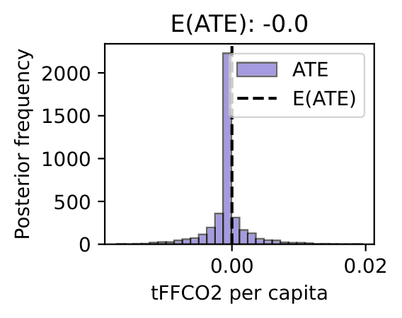
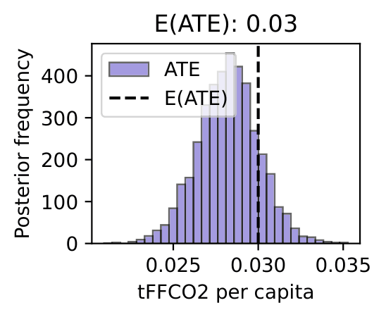
Joint Residential Electricity Results
- Various joint treatment models estimated with metro/local treatments, propensity score adjustment, & spatial parameters
| Variable | Base OLS | Spatial EV |
|---|---|---|
| Local density | -0.068*** | -0.068*** |
| Local diversity | +0.037*** | +0.037*** |
| Local diversity \(\times\) PS | -0.035*** | -0.035*** |
| Residual Moran’s I | 0.648 | 0.648 |
Individual Residential Energy Results
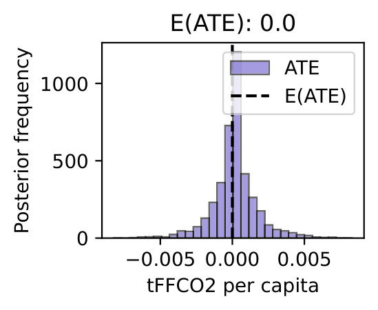
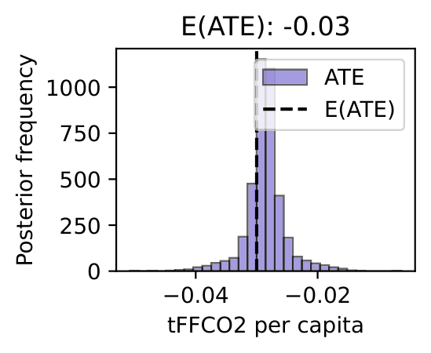
Joint Residential Energy Results
- Various joint treatment models estimated with metro/local treatments, propensity score adjustment, & spatial parameters
| Variable | Base OLS | Spatial EV |
|---|---|---|
| Local density | -0.120*** | -0.120*** |
| Local diversity | +0.008*** | +0.008*** |
| Local diversity \(\times\) PS | +0.010*** | +0.010*** |
| Residual Moran’s I | 0.431 | 0.431 |
Overall Results
- Production- and consumption-based emissions allocations tell fundamentally different stories: for production-based transportatation FFCO2, higher density lowers emissions but higher land use mix/destination access raises them
- Residential emissions results are mixed: density lowers both sources but other results vary
- Roadway network density has a consistently negative effect on transportation FFCO2 emissions
Discussion
- Congestion pricing/low-emission zones address external cost on local results from production-based transportation emissions
- Compact development reduces residential emissions
- Regional 5D averages have minimal effects on sector-specific emissions after controlling for local 5D effects
Future work
- Develop consumption(home)-based transportation emissions estimates based on OD flows
- Extension to other criteria air pollutants
- Spatial scaling analysis by city & climatic zone for population & 5D metrics
Thank you
Questions? Reach out any time.
Presentation & paper available:
https://hawkins-tech-lab.github.io/